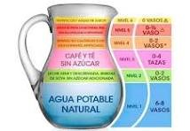

|
COLEGIO DE ESTUDIOS CIENTIFICOS Y TECNOLOGICOS DEL ESTADO DE MÉXICO.
PLANTEL IXTLAHUACA
Elaborado por: Daniela Iniestra de Jesús.
Grupo404.Numero de lista:13
Fecha de Elaboracion:12 de marzo de 2024.Hora:12:00 a.m.
Jarra del Buen Beber
Por qué es importante el agua
Para poder Mantener la temperatura corporal.
-Permitir el movimiento del cuerpo.
-Obtener minerales esenciales.
-Favorecer el funcionamiento cerebral, el estado
de alerta, la memoria a corto plazo, la atención y
hasta el estado de ánimo.
-Mantener una buena circulación de la sangre
llevando los nutrimentos a las células del cuerpo.
-Tener un buen funcionamiento digestivo
eliminando las sustancias que nuestro cuerpo no
necesita (a través de la orina y la digestión).
-Mantener nuestra piel hidratada y elástica.
-El agua que obtenemos para
reponer las perdidas proviene
en un 20 a 30% de los alimentos
que comemos y hasta en un 70 a
80% del agua simple y otras
bebidas que tomamos
diariamente.
Recomendaciones
3. No esperar a que el niño tenga sed, ya que este es un mecanismo
mediante el cuál nuestro cuerpo nos está indicando que ya tiene un grado
de deshidratación y necesita reponer agua.
4. Ten siempre una jarra de agua simple disponible en la mesa, entre
comidas fomenta que la tomen.
5. Los caldos y sopas contribuyen a cubrir los requerimientos de agua diarios.
6. Si estuvieron activos, jugando y sudando es importante reponer líquidos
bebiendo agua. Lo mismo en temporadas o climas de mucho calor.
Tip: Revisa de vez en cuando la orina de tus hijos o hijas, esta debe ser clara y
transparente, si está muy concentrada puede ser señal de que hace falta consumir más
liquidos, primordialmente agua natural

|

 Todos los derechos reservados. Elaborado por: Daniela Iniestra de Jesús.
Todos los derechos reservados. Elaborado por: Daniela Iniestra de Jesús.